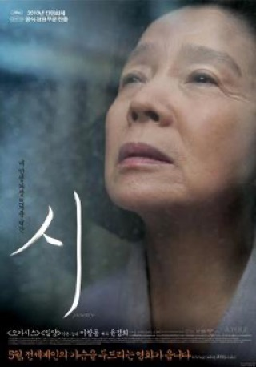

Poetry
From the festival
Play Trailer A frail woman in her mid-60s, Mi-ja (Yun Jeong-hie) is raising her teenage son Jong-wook (Lee Da-wit), and works as a housekeeper and nurse to bitter, bedridden Mr. Kang (Kim Hee-ra). In the film’s first movement, she faces two catastrophes, beginning with a doctor’s visit that reveals she’s suffering from early onset Alzheimer's. Rather than tell anyone, Mi-ja registers in an amateur poetry class. Then she discovers Jong-wook was among a group that raped a classmate, leading to her suicide. To keep the boys out of prison, a bribe must be paid to the victim’s poverty-stricken mother, but Mi-ja lacks the money to pay her share. As these two crises develop, she continues to work on writing a single poem. In lesser hands, all this could have easily turned into something overly sappy and cloying. But with his fifth feature, writer/director Lee Chang-dong eludes those risks, thanks to Yun’s luminous, often funny performance and his own uncanny gift for staging scenes with dispassionate, often wordless, subtlety. Both a lament for the frailty of human lives and a celebration of our insatiable appetite for creativity and beauty, Poetry is exquisite. —Larry Gross
- Directed by
- Lee Chang-dong
- Country
- South Korea
- Year
- 2010
- Running time
- 139 minutes
- Language
- Korean
- With
- Ahn Nae-sang, Kim Hee-ra, Kim Yong-taek, Lee Da-wit, Yun Jeong-hie
Source: Festival website programme (MVFF49): Wayback Machine copy; Festival film page: Wayback Machine copy; Poster from English Wikipedia (non-free file)